Vertex Meadow
MAKE A WORLD (Chrome or Firefox recommended)
About
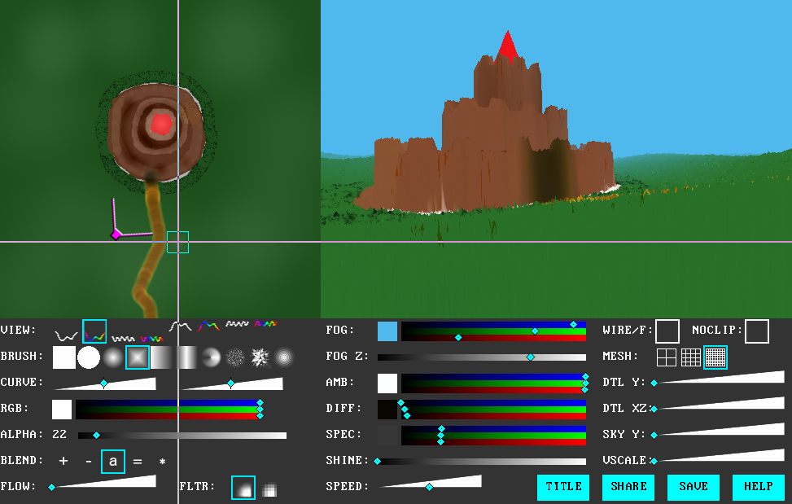Vertex Meadow is a tool that renders 2D images as explorable 3D terrain. With it you can create detailed and unusual 3D environments to explore using a 2D paint-program-like interface.
The tool runs in a browser using webgl and you can share your creations via URL.
You can also chain together multiple levels by creating triggers in your level that cause the player's browser to jump to a URL of your choice.
↓↓↓Scroll down for important usage tips↓↓↓
Examples
|
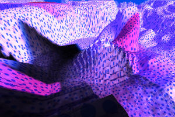
Mildly Coloured Polka Zone by BlueBerrySoft
|
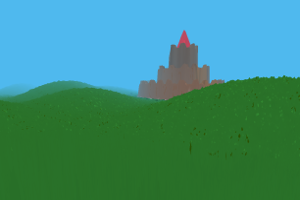
Castles
|
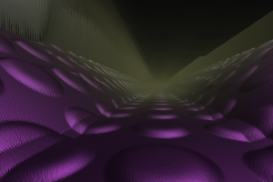
Deck 9
|
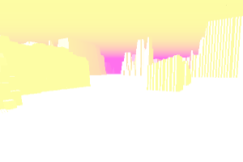
war remains by nuuup
|
|
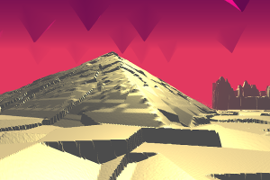
City of Gold
|
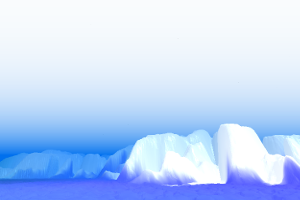
Iceberg
|
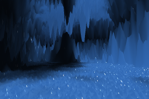
Crystal Caves
|
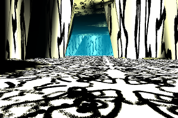
Death Grips presents Smirnoff the Licensed Cave Game Russian Vodka Prank GONE WRONG Pranks gone wild 2016 OFFICIAL PrankstersXDTV Game by nuuup
|
|
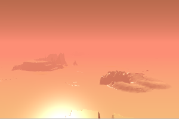
Valley of Desolation by Sally MacLarty
|
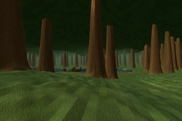
Forest by Hisashimaru
|

Tripod by Ben Porter
|
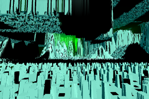
On Getting Lost by nuuup
|
|
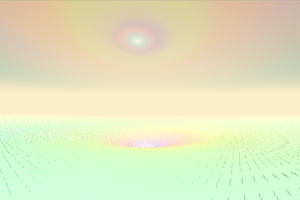
spectrum by @mchaza
|
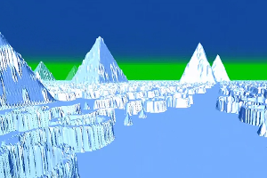
Tundra by @Fengxii
|
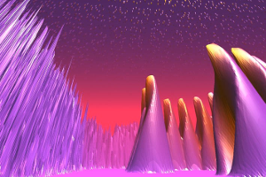
purple maze by Sally MacLarty
|
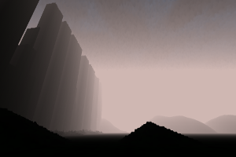
beneath a stained sky by @foodshipnine
|
Tips
- Press E to toggle edit mode
- Some views change colour and some change height
- Some views affect the ground and some affect the sky
- Some views affect terrain and some affect detailing
- Alpha = Height
- While in edit mode hold H and move your mouse left and right to change brush height
- Hold Z, X, Y or R and move your mouse along the x axis to change brush size and rotation
- Press T to reset brush size and rotation
- Hold N or M and move your mouse along the x axis to change the curve of the brush
- Hold shift and move your mouse to pan
- Use your mouse wheel to zoom, or use the 0 and 9 keys
- Press L to place a link while in explore mode (i.e. not edit mode)
- If you walk off the edge of the map, press J to go back to the start position
- If the app looses mouse capture, press E to exit edit mode (so you don't accidentally draw) and then click to regain capture
- The blend modes are:
- +: additive (increases height, makes colours brighter)
- -: subtractive (subtracts height, makes colours darker)
- a: alpha blending (good for colour views)
- =: no blending (good for setting exact height)
- *: multiplicative (use to reduce height while preserving shape)
- Set the flow to zero if you want to stamp once with each click
- You can create custom brushes by pressing C. This will replace the current brush with whatever is under the cursor.
- Click "share" to generate a unique URL for your creation that you can share with others
Exporting
You can export a standalone version of your level using this tool.
Source code
The source code is available hereIf you have feedback, find a bug or make something nice, please let me know by email: ian -at- ianmaclarty.com or via twitter: @muclorty.